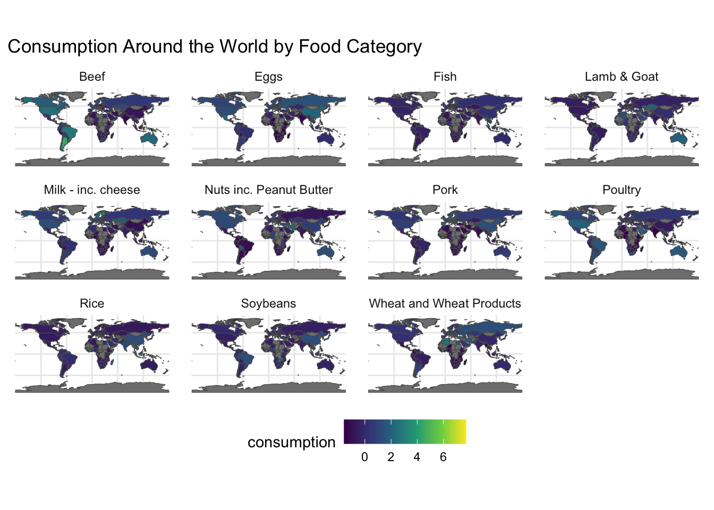

7 Exam 2 visualization
7.0.1 Research Question 1: What five countries consume the most food?
Code
# A tibble: 5 × 2
country tot_consumption
<chr> <dbl>
1 Finland 640.
2 Lithuania 555.
3 Sweden 550
4 Netherlands 534.
5 Albania 533.Code
7.0.1.1 Research Question 2: What are the top 5 consuming countries by food category?
Code
# A tibble: 55 × 4
# Groups: food_category [11]
country food_category consumption co2_emmission
<chr> <fct> <dbl> <dbl>
1 Argentina Beef 55.5 1712
2 Brazil Beef 39.2 1211.
3 USA Beef 36.2 1118.
4 Australia Beef 33.9 1045.
5 Bermuda Beef 33.2 1023.
6 Japan Eggs 19.2 17.6
7 Paraguay Eggs 18.8 17.3
8 China Eggs 18.8 17.2
9 Mexico Eggs 18.3 16.8
10 Ukraine Eggs 18.0 16.5
# ℹ 45 more rowsCode
ggplot(top_5_by_cat, aes(x = reorder(country, consumption), y = consumption)) +
geom_col() +
facet_wrap(~ food_category, scales = "free_x", nrow = 2) + # Spread out over 2 rows
theme_minimal(base_size = 14) + # Larger base font size
labs(
title = "Top 5 Consumption by Food Category",
y = "Consumption",
x = "Country"
) +
theme(
axis.text.x = element_text(angle = 45, hjust = 1),
strip.text = element_text(size = 16, face = "bold"),
panel.spacing = unit(1.5, "lines"),
legend.position = "none")7.0.2 Research Question 3: What does the consumption of each food look like?
Code
ne_countries(returnclass = "sf") |>
select(name, geometry) |>
mutate(name = case_when(
name == "United States of America" ~ "USA",
name == "Bosnia and Herz" ~ "Bosnia and Herzegovina",
name == "Czechia" ~ "Czech Republic",
name == "Taiwan" ~ "Taiwan. ROC", # Fixed typo: "Tiawan. ROC"
TRUE ~ name
)) |>
left_join(
fc |>
select(-co2_emmission) |> # Fixed typo: "co2_emmission"
group_by(food_category) |> # Fixed typo: "food_caregory"
mutate(consumption = (consumption - mean(consumption)) / sd(consumption)),
by = c("name" = "country")
) |>
pivot_wider(names_from = food_category, values_from = consumption) |> # Fixed typo: "consummption"
select(-`NA`) |>
pivot_longer(cols = -c(name, geometry),
names_to = "food_category",
values_to = "consumption") |>
ggplot() +
geom_sf(aes(fill = consumption)) +
facet_wrap(~ food_category) +
theme_minimal() +
theme(legend.position = "bottom")+
scale_fill_viridis_c() +
labs(title = "Consumption Around the World by Food Category")